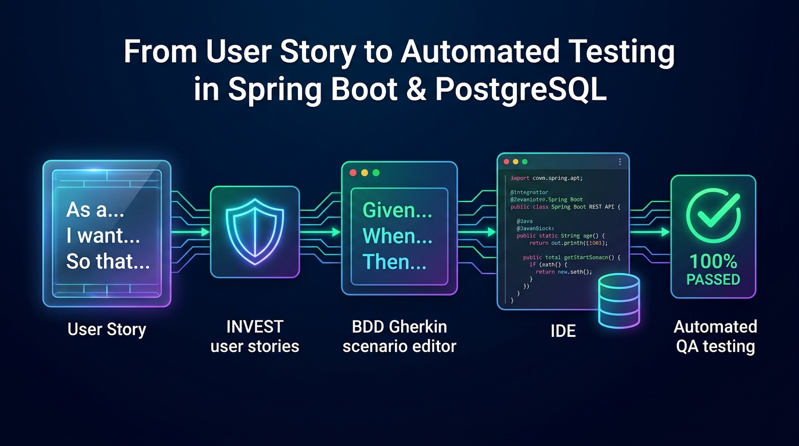
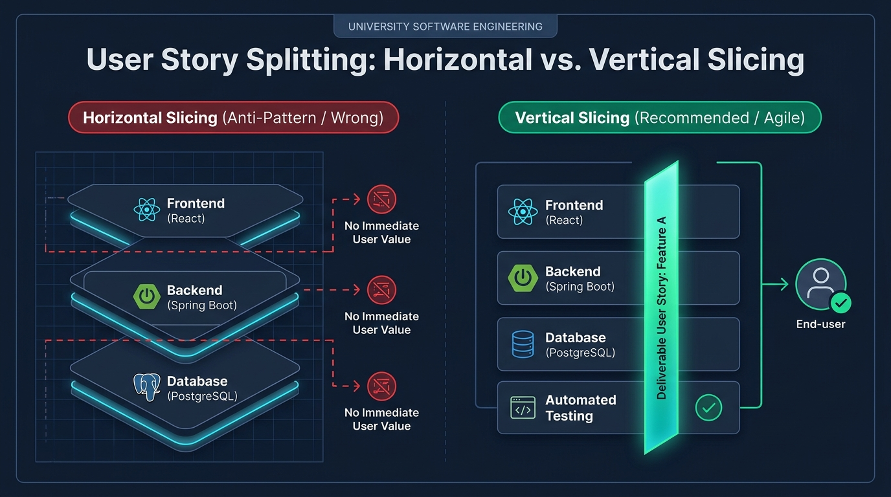

Historias de Usuario (User Stories): Explicación Completa Paso a Paso
Guía integral orientada a la Calidad de Software. Aprende a no enseñar las historias de usuario como un mero formulario textual, sino como el puente vivo que conecta la necesidad del usuario final con la arquitectura, los criterios de aceptación medibles, las pruebas automatizadas y la validación en producción.

¿Qué es una Historia de Usuario?
Descripción breve de una necesidad funcional expresada desde la perspectiva del usuario final
Una Historia de Usuario (User Story) es una descripción breve y en lenguaje natural de una necesidad o funcionalidad del software, formulada directamente desde el punto de vista de la persona u actor que utilizará el sistema.
Su propósito fundamental no es redactar un contrato técnico inmodificable, sino comunicar con absoluta claridad:
1. ¿Quién? (Who)
Identifica al usuario o rol concreto que experimenta el dolor o la necesidad dentro del dominio del negocio.
2. ¿Qué? (What)
Describe la acción o capacidad específica que el usuario desea ejecutar dentro del sistema.
3. ¿Para qué? (Why)
Expresa el valor real, beneficio o motivación de negocio que se obtiene al completar la acción.
Ejemplo Práctico Rector: Sistema de Gestión Académica Universitaria
Imaginemos que la universidad necesita gestionar el proceso de matrículas semestrales:
Idea Clave para tus Estudiantes
Observa que en la historia no estamos indicando cómo se programará la funcionalidad, qué tablas tendrá PostgreSQL ni qué controladores se implementarán en Spring Boot. Una historia describe el qué necesita el usuario y el por qué, dejando la solución técnica a la conversación y diseño de ingeniería del equipo.
¿Por qué Utilizamos Historias de Usuario?
Superando la desconexión entre especificaciones tradicionales y necesidades de valor real
En el desarrollo tradicional en cascada se redactaban extensos documentos de especificación técnica de requisitos de cientos de páginas. Los desarrolladores pasaban meses construyendo exactamente lo especificado, solo para descubrir al final que el cliente necesitaba algo completamente diferente.
| Requisito Tradicional Mal Planteado | Historia de Usuario Enfocada en Valor |
|---|---|
|
❌ «El sistema debe disponer de un formulario para registrar estudiantes». Defectos: No sabemos quién registra, qué información ingresa, quién valida ni cuál es el propósito de negocio. |
✅ «Como secretario académico, quiero registrar nuevos estudiantes para mantener actualizada la información académica de la universidad». Aciertos: Identifica al actor institucional, la acción concreta y el valor de auditoría institucional. |
Beneficios en la Asignatura de Calidad
- Facilita la comunicación fluida entre el Product Owner y los Developers.
- Evita ambigüedades mediante criterios de aceptación verificables.
- Permite derivar directamente casos de prueba funcionales y no funcionales.
- Permite ordenar y priorizar el Product Backlog según el valor económico.
Estructura de una Historia de Usuario
Desglose de los tres componentes canónicos (Who, What, Why)
| Componente | Pregunta Clave | Ejemplo en el Sistema Universitario |
|---|---|---|
| Como (Who) | ¿Quién lo necesita? | Secretario académico, Estudiante regular, Docente titular |
| Quiero (What) | ¿Qué acción necesita realizar? | Consultar mis calificaciones, Registrar asignaturas, Generar acta PDF |
| Para (Why) | ¿Para qué lo necesita? (Valor) | Para conocer mi rendimiento académico, Para habilitar mi proceso de titulación |
Regla de Oro en Aula
Evita el rol genérico: Nunca permitas que tus estudiantes escriban «Como usuario quiero...» cuando pueden precisar si se trata de un Estudiante, un Docente, un Administrador de Base de Datos o un Coordinador de Carrera. La especificidad del rol delimita los permisos de seguridad y las reglas de negocio.
¿Qué es INVEST?
Las seis características de calidad indispensables para evaluar una Historia de Usuario (Bill Wake)
El acrónimo INVEST es el estándar de la industria para verificar si una historia de usuario está bien concebida y lista para ingresar a un Sprint de desarrollo:
I • Independent (Independiente)
Debe poder implementarse, probarse y entregarse sin depender rígidamente de que otra historia específica esté terminada en el mismo ciclo.
Solución: Usar mocks o datos de prueba precargados en PostgreSQL para independizar el testing.
N • Negotiable (Negociable)
No es un contrato legal rígido tallado en piedra. Captura la esencia de la necesidad, pero los detalles finos se dialogan entre el PO y los desarrolladores.
V • Valuable (Valiosa)
Debe brindar un beneficio tangible y perceptible para el usuario final o para la organización, no ser una tarea técnica interna.
E • Estimable (Estimable)
El Scrum Team debe comprender suficientemente el dominio y los requisitos para estimar su esfuerzo relativo en Story Points.
Estimable: «Validar prerrequisitos al seleccionar una materia» (alcance claro: 3 puntos).
S • Small (Pequeña / Ajustada)
Debe ser lo suficientemente acotada para diseñarse, codificarse y probarse completamente dentro de un solo Sprint (típicamente de 2 semanas).
T • Testable (Comprobable / Verificable)
La historia debe tener criterios de aceptación tan objetivos que un evaluador de QA pueda decir con una prueba binaria: PASA o FALLA.
Comprobable: «El 95% de los alumnos completa su matrícula en menos de 3 pasos sin errores de validación».
Las 3 C de las Historias de Usuario (Ron Jeffries)
Card (Tarjeta), Conversation (Conversación) y Confirmation (Confirmación)
1. Card (Tarjeta)
Es la descripción sintética escrita en una tarjeta física o ticket de Jira. No contiene todos los detalles; actúa como un recordatorio para conversar sobre la necesidad.
2. Conversation (Conversación)
El diálogo colaborativo y continuo entre el Product Owner, los usuarios finales y los Developers durante el Refinamiento y Planning para resolver dudas y acordar el alcance.
3. Confirmation (Confirmación)
Los Criterios de Aceptación verificables que dictaminan formalmente cuándo la historia está completada a satisfacción y lista para superar la prueba de QA.
Lección Vital de Calidad
Una historia de usuario nunca debe reducirse a una frase solitaria pegada en un tablero de Jira. Sin la conversación que aclara los límites del sistema y sin la confirmación verificable de pruebas, la historia genera defectos costosos en producción.
¿Qué son los Criterios de Aceptación?
Las condiciones de satisfacción específicas que garantizan el cumplimiento de la necesidad
Los Criterios de Aceptación (Acceptance Criteria) son las condiciones específicas, observables y medibles que el software debe cumplir para que el Product Owner acepte la historia de usuario como completada.
Como estudiante regular, quiero consultar mis calificaciones en línea para conocer mi rendimiento académico actual.
Criterios de Aceptación Verificables:
- ✓ Seguridad: El estudiante debe estar debidamente autenticado con token JWT válido.
- ✓ Aislamiento de Datos: El sistema debe mostrar únicamente las calificaciones del estudiante logueado (cero fuga de datos ajenos).
- ✓ Filtro Temporal: El usuario debe poder seleccionar el período académico (ejemplo: 2026-1) y visualizar notas parciales y final.
- ✓ Estado Académico: Si la nota final es ≥ 7.0/10, debe mostrar el estado visual en verde:
APROBADO; en caso contrario,REPROBADO. - ✓ Escenario Vacío: Si no existen calificaciones registradas, debe mostrar un mensaje amigable: "Aún no se registran notas para este ciclo" en lugar de una pantalla en blanco o error 500.
- ✓ Rendimiento: La consulta del endpoint REST
GET /api/calificacionesdebe responder en menos de 1.5 segundos con 500 consultas simultáneas.
¿Qué es Gherkin y cómo se utiliza Given, When, Then?
El lenguaje del Desarrollo Guiado por Comportamiento (BDD) que conecta requisitos con pruebas automáticas
Gherkin es un lenguaje estructurado y legible tanto por personas de negocio como por computadoras (mediante frameworks como Cucumber o JBehave). Utiliza la tríada fundamental:
- Given (Dado): Establece el contexto, estado del sistema o precondición inicial.
- When (Cuando): Describe la acción específica ejecutada por el usuario o evento del sistema.
- Then (Entonces): Dictamina el resultado observable, postcondición o cambio de estado esperado.
¿Cuál es la Diferencia entre Épicas, Características e Historias?
Jerarquía de granularidad para descomponer sistemas grandes sin perder el rumbo
| Nivel | Definición y Alcance | Ejemplo en el Sistema Universitario |
|---|---|---|
| Épica | Objetivo estratégico de gran tamaño que abarca múltiples meses o Sprints y requiere descomposición. | ÉPICA: Gestión Académica Integral |
| Característica (Feature) | Capacidad funcional concreta del producto que resuelve un módulo específico del negocio. | FEATURE: Módulo de Matrículas en Línea |
| Historia de Usuario | Requerimiento atómico con valor directo que cabe cómodamente dentro de un solo Sprint. |
• HU-001: Consultar materias con cupo. • HU-002: Validar prerrequisitos aprobados. • HU-003: Confirmar y generar comprobante. |
¿Cómo Dividir una Historia de Usuario? (Story Splitting)
Por qué la división vertical de valor es superior a la división por capas técnicas
Uno de los errores más comunes en proyectos de estudiantes es dividir las historias de forma horizontal (por capas de arquitectura tecnológica). Veamos la comparación gráfica:

❌ División Horizontal (Técnica)
• Sprint 1: Crear tablas en PostgreSQL.
• Sprint 2: Crear entidades JPA y repositorios.
• Sprint 3: Crear controladores REST.
• Sprint 4: Diseñar interfaz en React.
Problema: Al terminar el Sprint 1, el estudiante no puede hacer absolutamente nada con unas tablas vacías. No hay incremento utilizable ni valor.
✅ División Vertical (Recomendada)
• HU-01: Consultar asignaturas disponibles.
Atraviesa toda la rebanada tecnológica: UI básica + Controller Spring Boot + Servicio + Base de datos PostgreSQL + Pruebas automatizadas.
Resultado: En 2 semanas el usuario real ya puede consultar sus materias. ¡Valor inmediato y verificable!
¿Cómo se Priorizan las Historias de Usuario? (Técnica MoSCoW)
Maximizando el retorno de inversión y la viabilidad del producto en cada Sprint
| Categoría MoSCoW | Significado de Negocio | Ejemplo en Sistema Académico |
|---|---|---|
| MUST HAVE | Imprescindible: Sin esto, el sistema no puede operar legal o funcionalmente. | Autenticación de alumnos, registro de matrícula, validación de cupos. |
| SHOULD HAVE | Importante: Muy deseable, pero el sistema puede arrancar temporalmente sin él. | Descarga de comprobante de matrícula en formato PDF, notificaciones por email. |
| COULD HAVE | Deseable: Añade confort si queda tiempo y presupuesto disponible. | Tema oscuro en la interfaz, personalización de colores del perfil del alumno. |
| WON'T HAVE | Fuera de Alcance: No se construirá en esta versión o ciclo actual. | Integración con redes sociales externas, predicción por IA de notas futuras. |
¿Cómo se Estiman las Historias? (Story Points & Fibonacci)
Estimación relativa de esfuerzo, complejidad e incertidumbre vs. horas tradicionales
Los Story Points no equivalen a horas hombre de reloj. Representan una medida holística relativa que combina: 1) Complejidad técnica, 2) Cantidad de esfuerzo y 3) Grado de incertidumbre / riesgo.
Se utiliza comúnmente la escala de Fibonacci modificada (1, 2, 3, 5, 8, 13, 21) porque a mayor tamaño, mayor es la incertidumbre:
Trivial / Muy Baja
Cambios menores, textos estáticos o consultas simples ya conocidas (ej. consultar datos personales de perfil).
Complejidad Media
Flujo CRUD estándar con validaciones en Spring Boot y pruebas unitarias (ej. registrar nuevo estudiante).
Alta Complejidad
Lógica de negocio densa, concurrencia, transaccionalidad en BD y múltiples pruebas (ej. realizar matrícula con bloqueo de cupos).
Demasiado Grande (Alerta)
Indica que la historia es una épica encubierta y debe dividirse en historias más pequeñas antes de entrar al Sprint.
Dinámica de Planning Poker en Clase
Cada integrante del equipo tiene un mazo de cartas con números Fibonacci. El PO explica la historia, los desarrolladores debaten dudas y muestran su carta al mismo tiempo. Si hay disparidad (ej. alguien vota 2 y otro 13), los extremos explican su razonamiento técnico, descubriendo riesgos ocultos hasta consensuar una estimación sólida.
¿Cómo se Construye una Historia de Usuario desde Cero?
Los 8 pasos prácticos para guiar a tus estudiantes en un proyecto real
Requerimiento solicitado por la universidad: «Los estudiantes olvidan constantemente su contraseña y saturan la secretaría académica solicitando que se las reseteen manualmente».
«Como estudiante regular, quiero solicitar la recuperación de mi contraseña mediante un token temporal a mi correo institucional, para recuperar el acceso a mis servicios académicos sin trámites presenciales».
1. El correo debe pertenecer al dominio institucional
@unibe.edu.ec.2. El enlace contiene un token criptográfico que expira en exactamente 15 minutos.
3. La nueva contraseña debe tener mínimo 8 caracteres, mayúscula, minúscula y número.
4. El enlace se invalida de forma inmediata tras el primer uso exitoso.
Paso 6: Matriz de Casos de Prueba Derivados
| ID Prueba | Condición de Entrada | Resultado Esperado (Validación) |
|---|---|---|
TC-REC-01 |
Correo registrado y activo | Se genera token, se envía email y se responde HTTP 200 con mensaje genérico. |
TC-REC-02 |
Correo inexistente o inactivo | Se responde el mismo mensaje genérico para evitar enumeración de usuarios (Seguridad). |
TC-REC-03 |
Token con más de 15 minutos | Se rechaza la operación con mensaje: "El enlace ha expirado. Solicite uno nuevo". |
TC-REC-04 |
Reutilización de token ya usado | Se bloquea la operación y se registra alerta de intento sospechoso. |
TC-REC-05 |
Contraseña débil (ej. "123456") | El formulario bloquea el envío indicando las reglas de complejidad faltantes. |
Historias de Usuario y su Implementación en Spring Boot & PostgreSQL
Conexión directa entre la especificación ágil, el código backend y las pruebas automatizadas (JUnit 5 / MockMvc)
En la asignatura de Verificación y Validación, los estudiantes deben comprender que la historia de usuario es la especificación viva que rige la implementación y las pruebas automatizadas.
@RestController
@RequestMapping("/api/v1/calificaciones")
@RequiredArgsConstructor
public class CalificacionController {
private final CalificacionService calificacionService;
// HU-002: Consultar calificaciones del estudiante autenticado
@GetMapping("/mis-notas")
@PreAuthorize("hasRole('ESTUDIANTE')")
public ResponseEntity<List<CalificacionDTO>> consultarMisNotas(
@AuthenticationPrincipal UserPrincipal principal,
@RequestParam(name = "periodo") String periodo) {
List<CalificacionDTO> notas = calificacionService
.obtenerNotasPorEstudianteYPeriodo(principal.getId(), periodo);
return ResponseEntity.ok(notas);
}
}@WebMvcTest(CalificacionController.class)
class CalificacionControllerTest {
@Autowired private MockMvc mockMvc;
@MockBean private CalificacionService calificacionService;
// Verifica Criterio de Aceptación 1: Estudiante autenticado consulta con éxito
@Test
@WithMockUser(roles = "ESTUDIANTE", username = "estudiante@unibe.edu.ec")
void deberiaRetornarCalificacionesCuandoEstudianteEstaAutenticado() throws Exception {
List<CalificacionDTO> mockNotas = List.of(
new CalificacionDTO("V&V de Software", 9.5, "APROBADO")
);
Mockito.when(calificacionService.obtenerNotasPorEstudianteYPeriodo(any(), eq("2026-1")))
.thenReturn(mockNotas);
mockMvc.perform(get("/api/v1/calificaciones/mis-notas?periodo=2026-1"))
.andExpect(status().isOk())
.andExpect(jsonPath("$[0].asignatura").value("V&V de Software"))
.andExpect(jsonPath("$[0].estado").value("APROBADO"));
}
}Definition of Ready (DoR) vs. Definition of Done (DoD)
Las dos compuertas de control de calidad al inicio y al final del Sprint
| Definition of Ready (DoR) • Compuerta de Entrada | Definition of Done (DoD) • Compuerta de Salida |
|---|---|
¿Cuándo está lista una historia para COMENZAR?
|
¿Cuándo está listo el incremento para ENTREGARSE?
|
¿Qué Errores Cometen los Estudiantes al Redactar Historias?
Antipatrones comunes detectados en talleres universitarios y cómo corregirlos
| Redacción Incorrecta | Problema Identificado | Redacción Profesional Corregida |
|---|---|---|
| «Como usuario quiero que funcione el sistema». | Demasiado general, sin alcance ni valor medible. | «Como estudiante quiero consultar mis calificaciones para conocer mi rendimiento». |
| «Como programador quiero crear una tabla de estudiantes». | Describe una tarea técnica, no una necesidad del usuario. | «Como secretario quiero registrar estudiantes para mantener actualizada la información institucional». |
| «Como administrador quiero gestionar todo». | Sin límites; equivale a una mega épica inestimable. | «Como administrador quiero desactivar cuentas inactivas para controlar los accesos». |
| «Como estudiante quiero un sistema rápido». | Subjetivo; no tiene condición verificable de prueba. | «Como estudiante quiero consultar mis notas en un máximo de dos segundos bajo 500 conexiones concurrentes». |
Ejemplo Completo de un Product Backlog con Historias
El inventario priorizado para el sistema universitario listo para ser refinado
| ID | Historia de Usuario Redactada | Prioridad | Story Points |
|---|---|---|---|
HU-01 |
Como estudiante quiero iniciar sesión con credenciales institucionales para acceder a mis servicios. | ALTA | 3 Pts |
HU-02 |
Como estudiante quiero recuperar mi contraseña vía correo para restablecer mi acceso autónomamente. | ALTA | 5 Pts |
HU-03 |
Como secretario académico quiero registrar nuevos estudiantes para alimentar la base de datos institucional. | ALTA | 5 Pts |
HU-04 |
Como estudiante quiero consultar asignaturas disponibles para conocer la oferta académica vigente. | ALTA | 3 Pts |
HU-05 |
Como estudiante quiero matricularme en materias habilitadas para oficializar mi período lectivo. | ALTA | 8 Pts |
HU-06 |
Como docente quiero asentar calificaciones parciales para mantener actualizado el récord estudiantil. | ALTA | 5 Pts |
HU-07 |
Como estudiante quiero consultar mis notas en línea para evaluar mi aprobación académica. | MEDIA | 3 Pts |
HU-08 |
Como coordinador de carrera quiero generar actas consolidadas en PDF para auditoría y archivo. | MEDIA | 8 Pts |
Actividad Práctica: Taller de Construcción de Historias
Dinámica colaborativa para afianzar redacción, INVEST, criterios y pruebas
1. Formación de Equipos
Grupos de 4 estudiantes asumen roles de PO, Scrum Master, Developer y QA Tester para el sistema universitario.
2. Redacción e INVEST
Redactan 10 historias de usuario completas asegurando el cumplimiento estricto de las 6 reglas INVEST.
3. Criterios & Gherkin
Para cada historia definen mínimo 3 criterios de aceptación y 2 escenarios formales en Gherkin (Given, When, Then).
4. Estimación & Sprint
Estiman con Fibonacci mediante Planning Poker y seleccionan 3 historias prioritarias para su primer Sprint.
Evaluación Interactiva del Aprendizaje
Comprueba los conceptos explicados con calificación automática y retroalimentación en tiempo real
Resumen: Lo que Deben Recordar
Matriz de consolidación rápida para repaso de exámenes y aplicación profesional
| Concepto | Idea Central Innegociable |
|---|---|
| Historia de Usuario | Necesidad expresada desde la óptica y beneficio del usuario final (el qué y por qué, no el cómo). |
| Como, Quiero, Para | Fórmula canónica que identifica al Actor, la Acción y el Valor de Negocio. |
| INVEST | 6 sellos de calidad: Independiente, Negociable, Valiosa, Estimable, Pequeña y Comprobable. |
| 3 C (Jeffries) | Card (tarjeta), Conversation (conversación viva) y Confirmation (criterios de prueba). |
| Criterios de Aceptación | Condiciones de satisfacción observables que dictan si la historia cumple su objetivo. |
| Gherkin (BDD) | Dado (contexto), Cuando (acción) y Entonces (resultado observable). |
| Story Splitting | Descomposición vertical de punta a punta (UI + Backend + BD + QA) en lugar de silos horizontales. |
| Story Points | Estimación relativa de esfuerzo, complejidad e incertidumbre usando Fibonacci en Planning Poker. |
| DoR vs. DoD | DoR: lista para comenzar; DoD: lista y probada según los estándares de calidad para producción. |
Bibliografía Oficial y Recursos de Profundización
Referencias primarias de la industria del software ágil
- 📖 Agile Alliance: User Stories Glossary and Guidelines. agilealliance.org
- 📖 Atlassian Agile Coach: User Stories with Examples and Templates. atlassian.com/agile
- 📖 U.S. Government Accountability Office (GAO): Agile Assessment Guide: Best Practices for Agile Adoption. gao.gov
- 📖 Salesforce Trailhead: Construct a User Story Module. trailhead.salesforce.com
La Secuencia Pedagógica Recomendada para la Asignatura
Necesidad del Usuario → Historia de Usuario → Validación INVEST → Criterios de Aceptación → Escenarios Gherkin → Casos de Prueba (JUnit 5) → Desarrollo → Validación contra la Definition of Done.